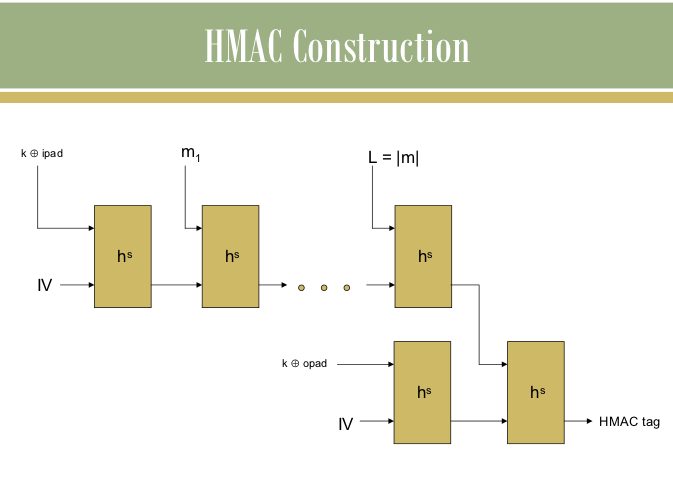

Cryptographic Hash Functions and Applications(HMAC)
Introduction
SHA-1 is a popular heuristic hash function that is currently in vogue. In this experiment, we shall familiarize ourselves with SHA-1 as well as look at one important applaication of hashing, namely, the HMAC algorithm which is currently used in the Internet to achieve data integrity
Theory
For a very brief overview of the Merkle-Damgard transform and the
design of HMAC from fixed length collision resistant hash function,
click here

In our experiments, instead of using a full-fledged collsion resistant
hash function h, we have replaced it with a "dummy" function h. You are
asked to assume collision resistance about the given function h and use
it to design HMAC
Objective
To understand the need,design and applications of collision resistant hash functions.
Manual
STEP1: For the given ciphertext in the PART I of the simulation
page, the first step is to decrypt it using each of the twenty-six
different keys, k=0,1,...,25 and obtain the corresponding plaintexts.
For decryption, you may use the tool given in the PART III of the
simulation page.
STEP 2: After each decryption, you may
cut-and-paste the resultant plaintext in the scratch-pad in the
(PART II) of the simulation page, if you need to remember it.
STEP 3: Finally, observe the plaintexts and choose the most appropriate
one (the one that is a meaningful English text) as the recovered
plaintext and cut-and-paste it in the text-field named PART IV "Solution
Plaintext". Also select the corresponding key in the text-field named
"Key" and click on "Check My answer" Button.
STEP 4 [OPTIONAL]: Verify that your answer is correct, by encrypting the solution plaintext with your key.
An Example:
Let us say we have a cipher text "KRZ DUH BRX" generated by a shift cipher.
We carry out the brute force attack as follows:
For k=0:
For k=1:
For k=2:
For k=3:
For k=3, we obtain a meaningful plain text namely how are you and hence we are done.
Procedure
Procedure for the experiment is given in manual.
Further Reading